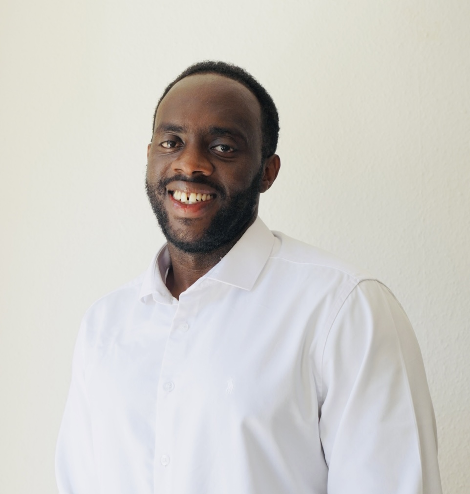

Cloud Engineer
Junior Cloud Engineer — AWS · Terraform · CI/CD

I’m a hands-on cloud engineer with a passion for building reliable, scalable infrastructure. I recently completed the AWS Cloud Practitioner certification and have been deploying real projects with Terraform, Docker, and CI/CD pipelines.
I’m looking for my first full-time cloud role — somewhere I can contribute immediately and keep growing. I care about clean code, clear documentation, and infrastructure you can sleep through the night knowing about.
I believe infrastructure should be declarative, version-controlled, and reproducible. Every Terraform resource, CI/CD pipeline, and container I build follows the same principle: if it can’t be recreated from code, it isn’t infrastructure.
I bring the same rigor to communication: clear documentation, multilingual stakeholder coordination, and a preference for over-communicating rather than assuming. Cloud engineering is as much about people as it is about APIs.
Berlin, Germany
Officially recognised in Germany.
If you’re hiring for a cloud role or just want to connect, I’d love to hear from you.